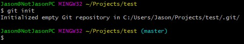

This is a log of things I discovered from class
You'll have to create one from Github. Follow the steps in this StackOverflow post.
master with main.
What does this mean?
When you are pushing to a newly created Github repo, you have to remember to not blindly spam
git push origin master
Instead, replace master with main
git push origin master
Do this if you want to use the default branch @trunk, and not unknowingly working in another branch). It's entirely ok to do your work in the master branch, it is just not recognised as the default branch.
If you think this is annoying out of habit, you can also change the default branch in Github to master. More info here.
Github did this name change for like "Diversity" movement reason. Can read more here.
Note that if you initialise a repo locally with Git, the default branch is still master.

Github also gives you ways to safely rename the master branches in your existing repo to main. More steps here.